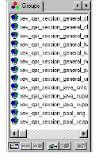

Working With Groups
A group is a (permanent or temporary) collection of related files or entities. Groups can contain any entity, instance, or combination of entities and instances.
You can use groups to track your progress on files from a specific project, save the full or partial results from a lengthy or sophisticated query, or understand relationships throughout an application or between multiple applications.
You can create and maintain groups by using the Groups pane in the model browser. The Groups pane displays a toolbar that allows you to administer your groups, such as displaying or adding members, as well as perform set operations, such as viewing intersections and unions.

Note: You may need to expand the Groups panel to display all the available toolbar buttons at the bottom of the panel.